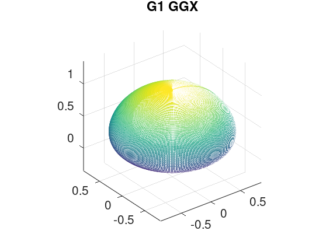

The following typical spherical distributions are plotted by the GNU Octave which is an open source alternative to MATLAB.
% user-interface roughness parameter
r = 0.5;
% Physically Based Shading at Disney
% α = r2
alpha = r * r;
alpha2 = alpha * alpha;
% H = [H_x, H_y, H_z] is the half vector, namely, the micro normal
% Usually, H is the 'm' in the NDF formulation
% And H is treated as the domain of the spherical distribution
[H_x, H_y, H_z] = sphere (256 - 1);
% H is in the tangent space where the N is (0, 0, 1)
NoH = H_z;
% χ is the positive characteristic function
% chi = heaviside(NoH);
chi = cast (NoH > 0, class (NoH));
% https://github.com/EpicGames/UnrealEngine/blob/4.27/Engine/Shaders/Private/BRDF.ush#L318
% https://www.mathworks.com/help/matlab/matlab_prog/array-vs-matrix-operations.html
% Equation 9.41 of Real-Time Rendering Fourth Edition
denominator = 1.0 + NoH .* (NoH .* alpha2 - NoH);
D = alpha2 ./ (pi .* denominator .* denominator);
D = chi .* D;
% plot
% surf(D .* H_x, D .* H_y, D .* H_z);
mesh(D .* H_x, D .* H_y, D.* H_z);
axis equal;
title ("NDF GGX");
% user-interface roughness parameter
r = 0.5;
% Physically Based Shading at Disney
% α = r2
alpha = r * r;
alpha2 = alpha * alpha;
% V = [V_x, V_y, V_z] is the outgoing direction
% Usually, V is the 'ω_o' in the G formulation
% And V is treated as the domain of the spherical distribution
[V_x, V_y, V_z] = sphere (256 - 1);
% V is in the tangent space where the N is (0, 0, 1)
NoV = V_z;
% technically, H is the micro normal while N is the macro normal
HoV = NoV;
% χ is the positive characteristic function
% chi = heaviside(HoV);
chi = cast (HoV > 0, class (HoV));
% Equation 9.37 of Real-Time Rendering Fourth Edition
a2 = NoV .* NoV ./ (alpha2 .* (1.0 - NoV .* NoV));
% The Λ function
% Equation 9.42 of Real-Time Rendering Fourth Edition
lambda = 0.5 * (-1.0 + sqrt(1.0 + 1.0 ./ a2));
% The G1 function
% Equation 9.24 of Real-Time Rendering Fourth Edition
G1 = 1.0 ./ (1.0 + lambda);
G1 = chi .* G1;
% plot
% surf(G1 .* V_x, G1 .* V_y, G1 .* V_z);
mesh(G1 .* V_x, G1 .* V_y, G1 .* V_z);
axis equal;
title ("G1 GGX");

% user-interface roughness parameter
r = 0.5;
% Physically Based Shading at Disney
% α = r2
alpha = r * r;
alpha2 = alpha * alpha;
% V = [V_x, V_y, V_z] is the outgoing direction
% Usually, V is the 'ω_o' in the G formulation
% And V is treated as the domain of the spherical distribution
[VM_x, VM_y, VM_z] = sphere (256 - 1);
P_x = [];
P_y = [];
P_z = [];
Int = [];
% TODO: use the vector operation to replace the for loop
parfor r = 170:1:180;
parfor c = 170:1:180;
V_x = VM_x(r, c);
V_y = VM_y(r, c);
V_z = VM_z(r, c);
% V is in the tangent space where the N is (0, 0, 1)
NoV = V_z;
% Equation 9.37 of Real-Time Rendering Fourth Edition
a2 = NoV * NoV / (alpha2 * (1.0 - NoV * NoV));
% The Λ function
% Equation 9.42 of Real-Time Rendering Fourth Edition
lambda = 0.5 * (-1.0 + sqrt(1.0 + 1.0 / a2));
% The G1 function
% Equation 9.24 of Real-Time Rendering Fourth Edition
G1 = 1.0 / (1.0 + lambda);
% L = [L_x, L_y, L_z] is the incident direction
% Usually, L is the 'ω_i' in the BRDF formulation
numSamples = 1024 - 1;
[L_x, L_y, L_z] = sphere (numSamples);
% d_L is the corresponding surface area of the unit sphere
% Usually, d_L is the 'dω_i' in the integral formulation
% Note: The 'd_L' is NOT correct since the area of the faces generated by the 'sphere' function is NOT the same
d_L = (4.0 * pi / numSamples / numSamples);
% H = [H_x, H_y, H_z] is the half vector, namely, the micro normal
% Usually, H is the 'm' in the NDF formulation
H_x = V_x + L_x;
H_y = V_y + L_y;
H_z = V_z + L_z;
H_norm = sqrt(H_x .* H_x + H_y .* H_y + H_z .* H_z);
H_x = H_x ./ H_norm;
H_y = H_y ./ H_norm;
H_z = H_z ./ H_norm;
% H is in the tangent space where the N is (0, 0, 1)
NoH = H_z;
% χ is the positive characteristic function
% chi = heaviside(NoH);
chi = cast (NoH > 0, class (NoH));
% https://github.com/EpicGames/UnrealEngine/blob/4.27/Engine/Shaders/Private/BRDF.ush#L318
% Equation 9.41 of Real-Time Rendering Fourth Edition
denominator = 1.0 + NoH .* (NoH .* alpha2 - NoH);
D = alpha2 ./ (pi .* denominator .* denominator);
absNoV(NoV > 0) = NoV;
absNoV(NoV <= 0) = -NoV;
% Note: The 'd_L' is NOT correct since the area of the faces generated by the 'sphere' function is NOT the same
intMat = chi .* G1 .* D ./ (4 .* absNoV) .* d_L;
int = sum(sum(intMat));
P_x(r, c) = V_x;
P_y(r, c) = V_y;
P_z(r, c) = V_z;
Int(r, c) = int;
end
end
P_x = resize(P_x, 256, 256);
P_y = resize(P_y, 256, 256);
P_z = resize(P_z, 256, 256);
Int = resize(Int, 256, 256);
% plot
% surf(Int .* P_x, Int .* P_y, Int .* P_z);
mesh(Int .* P_x, Int .* P_y, Int .* P_z);
axis equal;
title ("Weak White Furnace Test GGX");

% user-interface roughness parameter
r = 0.83666;
% Physically Based Shading at Disney
% α = r2
alpha = r * r;
alpha2 = alpha * alpha;
% V = [V_x, V_y, V_z] is the outgoing direction
% Usually, V is the 'ω_o' in the G formulation
theta_o = 1.5;
V_x = sin(theta_o);
V_y = 0;
V_z = cos(theta_o);
% V is in the tangent space where the N is (0, 0, 1)
NoV = V_z;
% Equation 9.37 of Real-Time Rendering Fourth Edition
a2 = NoV * NoV / (alpha2 * (1.0 - NoV * NoV));
% The Λ function
% Equation 9.42 of Real-Time Rendering Fourth Edition
lambda = 0.5 * (-1.0 + sqrt(1.0 + 1.0 / a2));
% The G1 function
% Equation 9.24 of Real-Time Rendering Fourth Edition
G1 = 1.0 / (1.0 + lambda);
% L = [L_x, L_y, L_z] is the incident direction
% Usually, L is the 'ω_i' in the BRDF formulation
numSamples = 1024 - 1;
[L_x, L_y, L_z] = sphere (numSamples);
% H = [H_x, H_y, H_z] is the half vector, namely, the micro normal
% Usually, H is the 'm' in the NDF formulation
H_x = V_x + L_x;
H_y = V_y + L_y;
H_z = V_z + L_z;
H_norm = sqrt(H_x .* H_x + H_y .* H_y + H_z .* H_z);
H_x = H_x ./ H_norm;
H_y = H_y ./ H_norm;
H_z = H_z ./ H_norm;
% H is in the tangent space where the N is (0, 0, 1)
NoH = H_z;
% χ is the positive characteristic function
% chi = heaviside(NoH);
chi = cast (NoH > 0, class (NoH));
% https://github.com/EpicGames/UnrealEngine/blob/4.27/Engine/Shaders/Private/BRDF.ush#L318
denominator = 1.0 + NoH .* (NoH .* alpha2 - NoH);
D = alpha2 ./ (pi .* denominator .* denominator);
% L is in the tangent space where the N is (0, 0, 1)
NoL = L_z;
% Equation 35 of "Understanding the Masking-Shadowing Function in Microfacet-Based BRDFs"
DV = chi .* G1 .* D ./ (4 .* abs(NoV) .* abs(NoL));
% plot
% surf(DV .* L_x, DV .* L_y, DV .* L_z);
mesh(DV .* L_x, DV .* L_y, DV .* L_z);
axis equal;
title ("BRDF GGX");
% 'dir' is treated as the domain of the spherical distribution
[dir_x, dir_y, dir_z] = sphere(256 - 1);
% [Sloan 2008] / Appendix A2 Polynomial Forms of SH Basis
% [sh_eval_basis_2](https: // github.com/microsoft/DirectXMath/blob/main/SHMath/DirectXSH.cpp#L143)
% ZH(Zonal Harmonics): 0->(0, 0) 2->(1, 0) 6->(2, 0)
% Sectorial Harmonics: 1->(1,-1) 3->(1, 1) 4->(2,-2) 5->(2,-1) 7->(2, 1) 8->(2, 2)
% 1.0 / (2.0 * sqrt(pi)) = 0.282094791773878140
polynomial_i0_l0_m0 = 0.282094791773878140;
% sqrt(3.0) / (2.0 * sqrt(pi)) = 0.488602511902919920
polynomial_i2_l1_m0 = 0.488602511902919920.*dir_z;
% (sqrt(5.0) * 3.0) / (4.0 * sqrt(pi)) = 0.946174695757560080
% (sqrt(5.0) * -1.0) / (4.0 * sqrt(pi)) = -0.315391565252520050
polynomial_i6_l2_m0 = 0.946174695757560080.*dir_z.*dir_z + -0.315391565252520050;
% -sqrt(3.0) / (2.0 * sqrt(pi)) = -0.488602511902919920
polynomial_i1_l1_mN1 = -0.488602511902919920.*dir_y;
polynomial_i3_l1_m1 = -0.488602511902919920.*dir_x;
% sqrt(15.0) / (2.0 * sqrt(pi)) = 1.092548430592079200
% sqrt(15.0) / (4.0 * sqrt(pi)) = 0.546274215296039590
polynomial_i4_l2_mN2 = 1.092548430592079200.*dir_y.*dir_x;
% polynomial_i4_l2_mN2 = 0.546274215296039590.*(dir_x.*dir_y + dir_y.*dir_x);
polynomial_i8_l2_m2 = 0.546274215296039590.*(dir_x.*dir_x - dir_y.*dir_y);
% -sqrt(15.0) / (2.0 * sqrt(pi)) = -1.092548430592079200
polynomial_i5_l2_mN1 = -1.092548430592079200.*dir_y.*dir_z;
polynomial_i7_l2_m1 = -1.092548430592079200.*dir_x.*dir_z;
% change to the target basis function
polynomial = abs(polynomial_i6_l2_m0);
% plot % surf(polynomial.*dir_x, polynomial.*dir_y, polynomial.*dir_z);
mesh(polynomial.*dir_x, polynomial.*dir_y, polynomial.*dir_z);
axis equal;
title("SH 2 0");